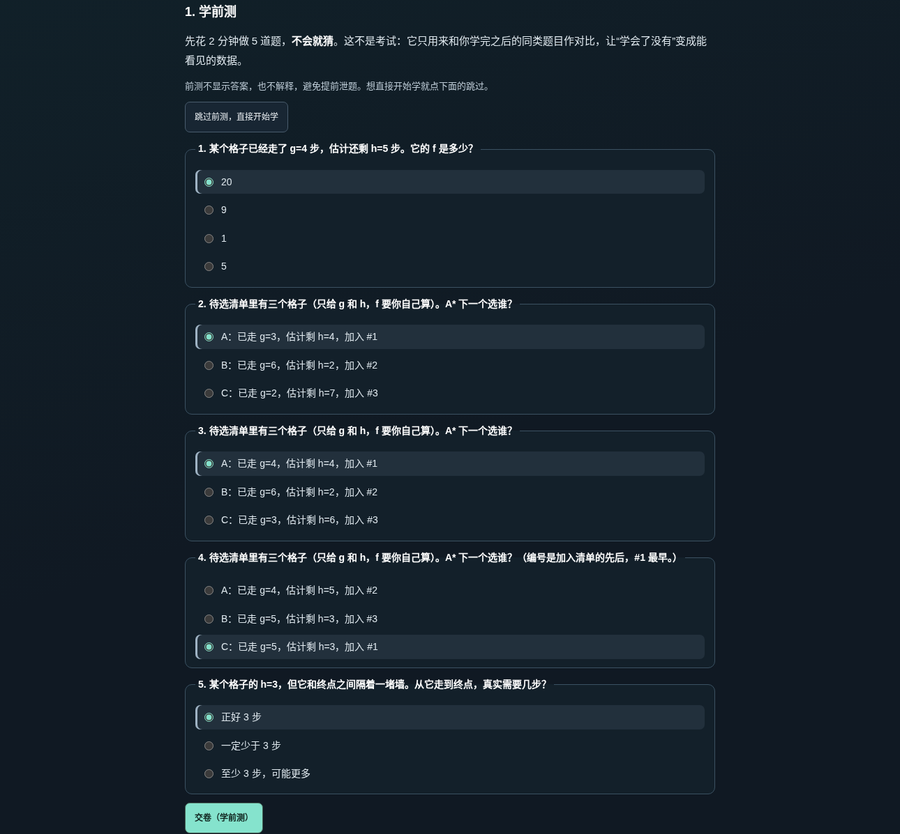
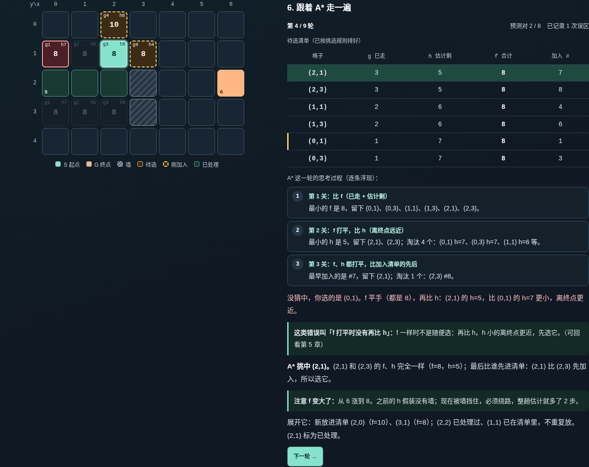

v2 补上了“从零讲懂 A*”的 6 章入门。但两件事仍然缺位：
| v2 的缺口 | 后果 | v3 改进 |
|---|---|---|
| 只有学完后的 5 道小测，没有学前基线 | 答对 5 题可能是本来就会，教学是否有效无法衡量，学习者也不知道自己哪里没懂 | 入门开头插入 5 题学前测，结尾的学后测考同样 5 个知识点、换一套数字，生成逐知识点的前后对比 |
| 揭晓答案时只给一句结论 | 看不到 A* 是怎么从一堆格子里筛出一个的，而这正是最难懂的部分 | 把 A* 自己的筛选过程做成逐条浮现的思考流：比 f → f 打平比 h → 都平比加入先后，被淘汰的格子在地图上同步变灰 |
| 猜错只说“真实选择为什么更优先” | 学习者不知道自己属于哪一类误区，也不知道该回看哪里 | 每次错选都归到它跳过的那条规则（只看 h、只看 g、f 算错、f 打平没比 h、都平没比顺序），并给出回看第几章 |


报告给三项分数（学前测 / 学后测 / 逐轮预测），逐知识点标注“本来就会 / 学会了 / 还要再看 / 前测对后测错”，按出错原因归类误区，每个薄弱项都带“回看第 N 章”按钮，并可导出一段纯文字记录。
真实性与边界：所有正确答案由站内引擎的 comparePriority 求出，单元测试锁定“试卷答案 = 引擎判定”，并检验每道选格题确实需要用到它所考的那条规则（只看“离终点近”或“走得少”都会答错）。报告只在浏览器内生成、不上传、刷新即清空，它说明“此刻能不能按规则做题”，不等于长期掌握；前后测是作者方设计的平行卷，未做真人信度效度检验。真人新手测试仍须作者本人完成，现在可直接导出报告文字作为客观记录。